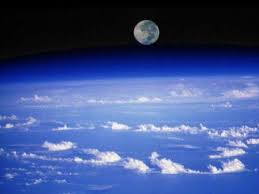
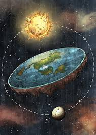
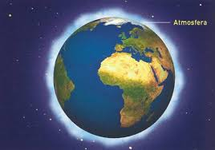
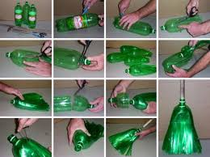

El Día de la Tierra es un día celebrado en muchos países el 22 de abril.
Muestra información hacerca de porque se celebra.
Muestra informacion hacerca de su tamaño.
Muestra informacion hacerca de su antiguedad.
Muestra su historia o leyenda.
Muestra informacion hacerca de efectos y causas.
Muestra su medidas para prevenir la contaminación.
Muestra comentario personal.
El Día de la Tierra es un día celebrado en muchos países el 22 de abril. Su promotor, el senador estadounidense Gaylord Nelson, instauró este día para crear una conciencia común a los problemas de la superpoblación, la producción de contaminación, la conservación de la biodiversidad y otras preocupaciones ambientales para proteger la Tierra. Es un día para rendir homenaje a nuestro planeta y reconocer a la Tierra como nuestro hogar y nuestra madre, así como lo han expresado distintas culturas a lo largo de la historia, demostrando la interdependencia entre sus ecosistemas y los seres vivos que la habitamos.
Esta fecha fue elegida porque el 22 de abril de 1970 una manifestación en Estados Unidos para que se creara en el Gobierno una agencia ambiental que trabaje sobre las problemáticas medioambientales.
Desde 1970 cada 22 de abril se celebra el día internacional de la tierra; creado con el fin de generar participación y conciencia ambiental entre las personas, así como para apoyar los programas e iniciativas ambientales que se gestan año a año desde entonces.
Tiene una forma cónica simétrica y la superficie terrestre o corteza está dividida en varias placas tectónicas que se deslizan sobre el magma durante periodos de varios millones de años. La superficie está cubierta por continentes e islas, estos poseen varios lagos, ríos y otras fuentes de agua, que junto con los océanos de agua salada que representan cerca del 71 % de la superficie construyen la hidrósfera. No se conoce ningún otro planeta con este equilibrio de agua líquida, que es indispensable para cualquier tipo de vida conocida. Los polos de la Tierra están cubiertos en su mayoría de hielo sólido (Indlandsis de la Antártida) o de banquisas (casquete polar ártico). El interior del planeta esgeológicamente activo, con una gruesa capa de manto relativamente sólido, un núcleo externo líquido que genera un campo magnético, y un núcleo de hierro sólido interior aproximadamente del 88 %.

La Tierra se formó hace aproximadamente 4550 millones de años y la vida surgió unos mil millones de años después. Es el hogar de millones de especies, incluyendo los seres humanos y actualmente el único cuerpo astronómico donde se conoce la existencia de vida. La atmósfera y otras condiciones abióticas han sido alteradas significativamente por la biosfera del planeta, favoreciendo la proliferación de organismos aerobios, así como la formación de una capa de ozono que junto con el campo magnético terrestre bloquean la radiación solar dañina, permitiendo así la vida en la Tierra. Las propiedades físicas de la Tierra, la historia geológica y su órbita han permitido que la vida siga existiendo. Se estima que el planeta seguirá siendo capaz de sustentar vida durante otros 500 millones de años, ya que según las previsiones actuales, pasado ese tiempo la creciente luminosidad del Sol terminará causando la extinción de la biosfera.
La tierra es una historia de la mitologia mexica que cuenta con multiples versiones, todas ellas buscan dar explicación a la presencia de los volcanes TIERRA. Tiempo después el guerrero regresó con la cabeza de su rival sangrando en su lanza, por lo que recibió un festín por su victoria. Sin embargo, su amor se dio por acabado ya que la princesa había muerto. Con el corazón roto llevó el cuerpo de su amada a un monte y los dioses la convirtieron en volcán inactivo. Después, el guerrero tomó una antorcha y prometió que ningún huracán por más fuerte que llevara sus aguas apagaría el fuego con el que vela el cuerpo de su amada. Por esto, los dioses le entregaron la eternidad convirtiéndolo.
En la actualidad es un tema con una gran seriedad ya que aumenta, tiene las causas y efectos que provocan la contaminación
Las principales causas de la contaminación son:
Los efectos se manifiestan por las alteraciones en los ecosistemas; en la generación y propagación de enfermedades en los seres vivos, muerte masiva y, en casos extremos, la desaparición de especies animales y vegetales; inhibición de sistemas productivos y, en general, degradación de la calidad de vida (salud, aire puro, agua limpia, recreación, disfrute de la naturaleza, etc.).
El cuidado de la Tierra se puede tomar como el cuidado del suelo vivo. El estado del suelo suele ser la mejor medida de la salud y el bienestar de la sociedad. Hay muchas buenas técnicas para cuidar el suelo, pero el mejor método para ver si el suelo está sano es ver cuanta vida crece ahí. Una regla que podemos hacer en nuestra casa es la regla de las 3R.
Si reducimos el problema, disminuimos el impacto en el medio ambiente. Los problemas de concienciación, habría que solucionarlos empezando por esta erre. La reducción puede realizarse en 2 niveles: reducción del consumo de bienes o de energía. De hecho, actualmente la producción de energía produce numerosos desechos (desechos nucleares, dióxido de carbono...). El objetivo sería:
Segunda erre más importante, igualmente debido a que también reduce impacto en el medio ambiente, indirectamente. Ésta se basa en reutilizar un objeto para darle una segunda vida útil. Todos los materiales o bienes pueden tener más de una vida útil, bien sea reparándolos para un mismo uso o con imaginación para un uso diferente. Ejemplos: Utilizar la otra cara de las hojas impresas, rellenar botellas.
Ésta es una de las erres más populares debido a que el sistema de consumo actual ha preferido usar envases de materiales reciclables (plásticos y bricks, sobre todo), pero nobiodegradables. De esta forma se necesita el empleo en mayor forma personal y energía en el proceso. Ejemplo: El vidrio y la mayoría de plásticos se pueden reciclar calentándolos hasta que se funden y dándoles una nueva forma. Es como utilizar algo de su principio, aunque la eficiencia no es del cien por cien en general. En el caso del vidrio en concreto, sí es completamente reciclable: de una botella se podría obtener otra botella.
No podemos segui lastimando a quien nos mantiene con vida, que nuestro amor sea para la tierra también.